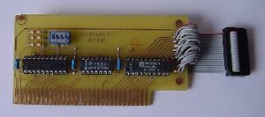

Este circuito es una interface de E/S para PC diseñada como una tarjeta ISA estándar. El diseño es lo más sencillo posible ya que únicamente consta de un comparador, un buffer, un circuito NAND, resistencias y condensadores.
El circuito no hace más que actuar como un simple buffer de entrada/salida entre el conector externo y el bus ISA del ordenador. La tarjeta deberá direccionarse como cualquier otra tarjeta estándar, por lo que habrá que asignarle una dirección base de E/S. esta función se realizará a través del dip switch que se ve en el diseño y sus valores corresponden con los de la tabla 1. El conector externo proporciona 8 señales de E/S (IO0 a IO7), dos líneas de dirección (A0 y A1), una señal de habilitación activa a nivel bajo (/ENABLE), una señal de lectura activa a nivel bajo (/RD) y una señal de escritura activa también a nivel bajo (/WR). Además de estas señales se tienen líneas de alimentación de +5V y señales de tierra.
| 300 | 304 | 308 | 30C | 310 | 314 | 318 | 31C | |
| A | ON | OFF | ON | OFF | ON | OFF | ON | OFF |
| B | ON | ON | OFF | OFF | ON | ON | OFF | OFF |
| C | ON | ON | ON | ON | OFF | OFF | OFF | OFF |
Con el dip switch se selecciona el estado lógico que tendrán las señales P0, P1 y P2 del comparador. Las resistencias, actuando como resistencias de pull-up, proporcionan un nivel lógico alto cuando alguna de estas entradas esté abierta en el interruptor. El resto de entradas P del comparador se mantienen a un nivel lógico fijo (todos a bajo, menos P6 que está a alto). Este tinglado de que unas estén a nivel bajo y alto de forma fija es por el rango de direcciones que estamos codificando. La tarjeta pude tomar direcciones entre la 0x300 y la 0x31C. Esto implica que las señales A8 y A9 del bus siempre estarán a 1 ya que si el resto están a 0 estariamos codificando la dirección 0x300. Para direccionar el resto de valores posibles del rango únicamente es necesario modificar los valores de los 3 bits de menor peso, es decir, A2, A3 y A4 del bus ISA.Las señales A0 y A1 del bus ISA se puentean directamente con las señales A0 y A1 del conector, por si se quiere direccionar dentro del dispositivo que conectemos (crear nuestro propio bus externo).
Por tanto, las líneas de dirección del bus ISA van al comparador, las líneas del dip switch, junto con las líneas de estado fijo comentadas anteriormente van al comparador, activando la señal a nivel bajo P=Q cuando la dirección programada y la del bus ISA coincidan, esto implica que estamos direccionando la tarjeta de interface. Se supone por tanto, que querremos hacer algún tipo de operación de entrada salida sobre la misma, por lo que se activa la señal de ENABLE del buffer, para permitir la transferencia en un sentido o en otro. El sentido, dependerá del estado de las señales RD y WR. Cuando RD se activa (a nivel bajo) estamos indicando una transferencia desde el conector al PC. La activación (a nivel bajo) de WR, implica una transferencia desde el PC al conector.